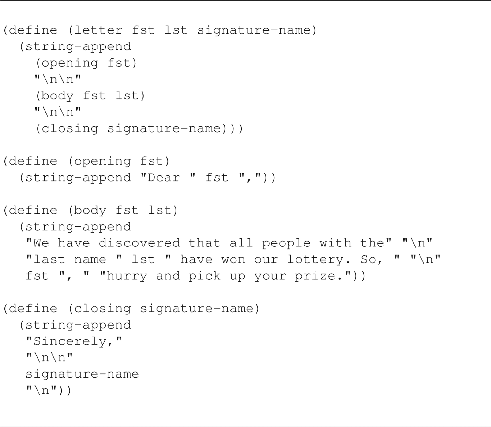
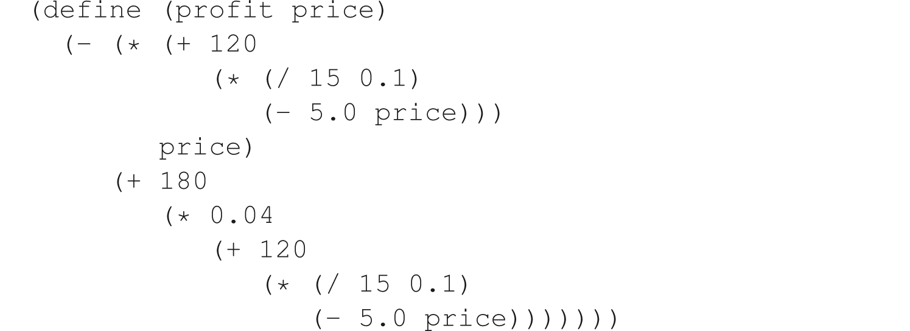

2.3 Composing Functions
A program rarely consists of a single function definition. Typically, programs consist of a main definition and several other functions and turns the result of one function application into the input for another. In analogy to algebra, we call this way of defining functions composition, and we call these additional functions auxiliary functions or helper functions.
Consider the program of figure 12 for filling in letter templates. It consists of four functions. The first one is the main function, which produces a complete letter from the first and last name of the addressee plus a signature. The main function refers to three auxiliary functions to produce the three pieces of the letter—the opening, body, and signature—and composes the results in the correct order with string-append.

Figure 12: A batch program
Stop! Enter these definitions into DrRacket’s definitions area, click RUN, and evaluate these expressions in the interactions area:
> (letter "Matthew" "Fisler" "Felleisen")
"Dear Matthew,\n\n We have discovered that …\n"
> (letter "Kathi" "Felleisen" "Findler")
"Dear Kathi,\n\nWe have discovered that …\n"
Aside The result is a long string that contains "\n", which represents a new line when the string is printed. Now Add (require 2htdp/batch-io) to your program, which adds the function write-file to its repertoire; it allows you to print this string to the console:
> (write-file 'stdout (letter "Matt" "Fiss" "Fell"))
Dear Matt,
We have discovered that all people with the
last name Fiss have won our lottery. So,
Matt, hurry and pick up your prize.
Sincerely,
Fell
'stdout
Think of 'stdout as a String for now.
Chapter 2.5 explains such batch programs in some depth. End
In general, when a problem refers to distinct tasks of computation, a program should consist of one function per task and a main function that puts it all together. We formulate this idea as a simple slogan:
Define one function per task.
The advantage of following this slogan is that you get reasonably small functions, each of which is easy to comprehend and whose composition is easy to understand. Once you learn to design functions, you will recognize that getting small functions to work correctly is much easier than doing so with large ones. Better yet, if you ever need to change a part of the program due to some change to the problem statement, it tends to be much easier to find the relevant parts when it is organized as a collection of small functions as opposed to a large, monolithic block.
Here is a small illustration of this point with a sample problem:
Sample Problem The owner of a monopolistic movie theater in a small town has complete freedom in setting ticket prices. The more he charges, the fewer people can afford tickets. The less he charges, the more it costs to run a show because attendance goes up. In a recent experiment the owner determined a relationship between the price of a ticket and average attendance.
At a price of $5.00 per ticket, 120 people attend a performance. For each 10-cent change in the ticket price, the average attendance changes by 15 people. That is, if the owner charges $5.10, some 105 people attend on the average; if the price goes down to $4.90, average attendance increases to 135. Let’s translate this idea into a mathematical formula:
Stop! Explain the minus sign before you proceed.
Unfortunately, the increased attendance also comes at an increased cost. Every performance comes at a fixed cost of $180 to the owner plus a variable cost of $0.04 per attendee.
The owner would like to know the exact relationship between profit and ticket price in order to maximize the profit.
While the task is clear, how to go about it is not. All we can say at this point is that several quantities depend on each other.
When we are confronted with such a situation, it is best to tease out the various dependencies, one by one:
1. The problem statement specifies how the number of attendees depends on the ticket price. Computing this number is clearly a separate task and thus deserves its own function definition:
(define (attendees ticket-price)
(- 120 (* (- ticket-price 5.0) (/ 15 0.1))))
2. The revenue is exclusively generated by the sale of tickets, meaning it is exactly the product of ticket price and number of attendees:
(define (revenue ticket-price)
(* ticket-price (attendees ticket-price)))
3. The cost consists of two parts: a fixed part ($180) and a variable part that depends on the number of attendees. Given that the number of attendees is a function of the ticket price, a function for computing the cost of a show must also consume the ticket price so that it can reuse the attendees function:
(define (cost ticket-price)
(+ 180 (* 0.04 (attendees ticket-price))))
4. Finally, profit is the difference between revenue and costs for some given ticket price:
(define (profit ticket-price)
(- (revenue ticket-price)
(cost ticket-price)))
The BSL definition of profit directly follows the suggestion of the informal problem description.
These four functions are all there is to the computation of the profit, and we can now use the profit function to determine a good ticket price.
Exercise 27. Our solution to the sample problem contains several constants in the middle of functions. As “One Program, Many Definitions” already points out, it is best to give names to such constants so that future readers understand where these numbers come from. Collect all definitions in DrRacket’s definitions area and change them so that all magic numbers are refactored into constant definitions. 
Exercise 28. Determine the potential profit for these ticket prices: $1, $2, $3, $4, and $5. Which price maximizes the profit of the movie theater? Determine the best ticket price to a dime.
Here is an alternative version of the same program, given as a single function definition:

Enter this definition into DrRacket and ensure that it produces the same results as the original version for $1, $2, $3, $4, and $5. A single look should suffice to show how much more difficult it is to comprehend this one function compared to the above four.
Exercise 29. After studying the costs of a show, the owner discovered several ways of lowering the cost. As a result of these improvements, there is no longer a fixed cost; a variable cost of $1.50 per attendee remains.
Modify both programs to reflect this change. When the programs are modified, test them again with ticket prices of $3, $4, and $5 and compare the results.